פשוט להצליח במתמטיקה › כל הנושאים › גאומטריה
גאומטריה – סרטוני הסבר ותרגול
57 סרטוני הסבר ותרגול בנושא גאומטריה – לכיתה ח׳, כיתה ט׳, שאלון 471, שאלון 571. כל נושא מוסבר מהקל אל הקשה: קודם הרעיון, אחר כך תרגילים, ובסוף שאלות בסגנון בגרות. הכול בחינם, בשיטת "פשוט להצליח".
רוצים לעקוב אחרי ההתקדמות?נרשמים בחינם, וכל סרטון שראיתם מסומן ✓. ממשיכים מכל מכשיר.
הצטרפות בחינם ←גאומטריה – כיתה ח׳ כל הנושאים של כיתה ח׳ ←
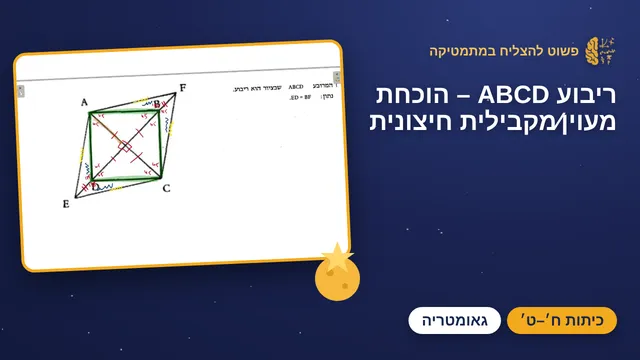
ריבוע ABCD – הוכחת מעוין∕מקבילית חיצונית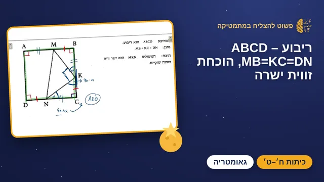
ריבוע ABCD – MB=KC=DN, הוכחת זווית ישרה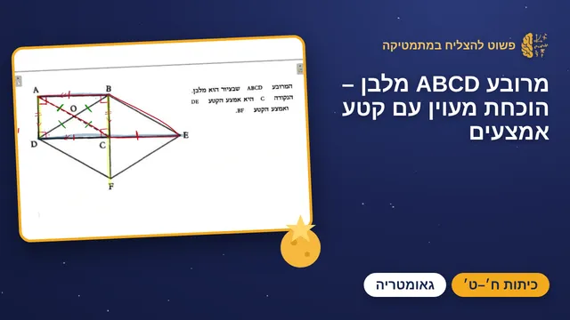
מרובע ABCD מלבן – הוכחת מעוין עם קטע אמצעים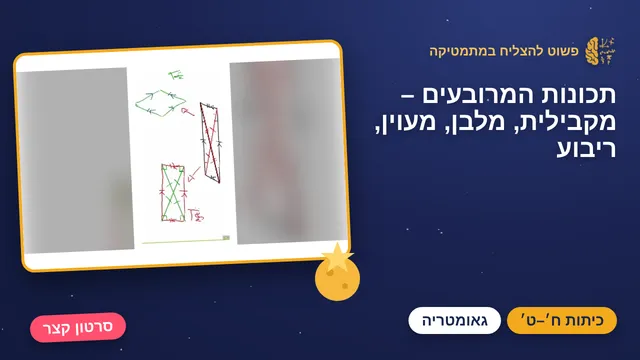
תכונות המרובעים – מקבילית, מלבן, מעוין, ריבוע · סרטון קצר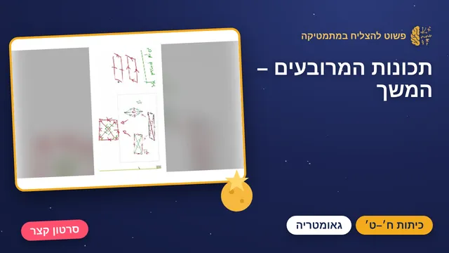
תכונות המרובעים – המשך · סרטון קצרגאומטריה – כיתה ט׳ כל הנושאים של כיתה ט׳ ←
 חזרה בגאומטריה – מקבילית, מלבן ומשולשים דומים
חזרה בגאומטריה – מקבילית, מלבן ומשולשים דומים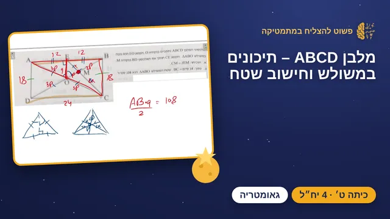
מלבן ABCD – תיכונים במשולש וחישוב שטחריבוע ABCD – הוכחת מעוין∕מקבילית חיצוניתריבוע ABCD – MB=KC=DN, הוכחת זווית ישרהמרובע ABCD מלבן – הוכחת מעוין עם קטע אמצעים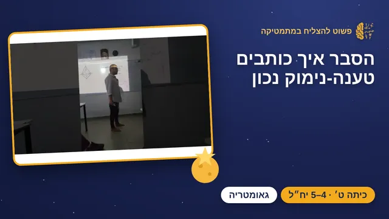
הסבר איך כותבים טענה-נימוק נכוןתכונות המרובעים – מקבילית, מלבן, מעוין, ריבוע · סרטון קצרתכונות המרובעים – המשך · סרטון קצר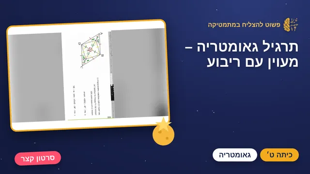
תרגיל גאומטריה – מעוין עם ריבוע · סרטון קצרמשולש 30-60-90 – תרגיל גאומטריה · סרטון קצרתרגיל בגאומטריה – זווית ישרה · סרטון קצר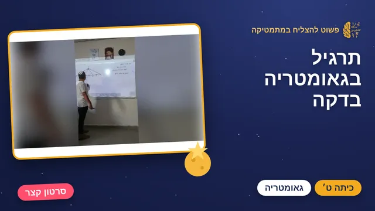
תרגיל בגאומטריה בדקה · סרטון קצרגאומטריה – שאלון 471 כל הנושאים של שאלון 471 ←
 קווים מיוחדים במשולש – חוצה זווית, תיכון, גובה וקטע אמצעיםחזרה בגאומטריה – מקבילית, מלבן ומשולשים דומיםמלבן ABCD – תיכונים במשולש וחישוב שטח
קווים מיוחדים במשולש – חוצה זווית, תיכון, גובה וקטע אמצעיםחזרה בגאומטריה – מקבילית, מלבן ומשולשים דומיםמלבן ABCD – תיכונים במשולש וחישוב שטח מרובעים כל החוקים כיתה ט י 4 5 יח מטורף הכל ברגע
מרובעים כל החוקים כיתה ט י 4 5 יח מטורף הכל ברגע 30 60 90 משולש
30 60 90 משולש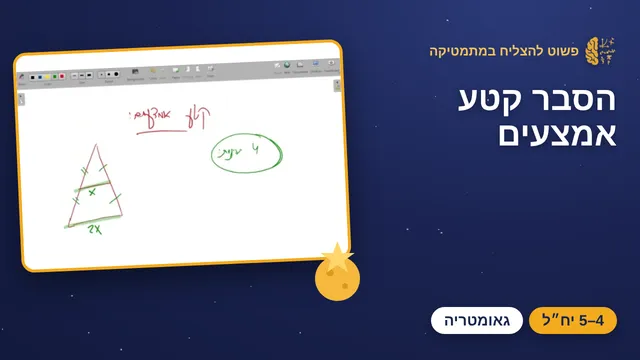
הסבר קטע אמצעים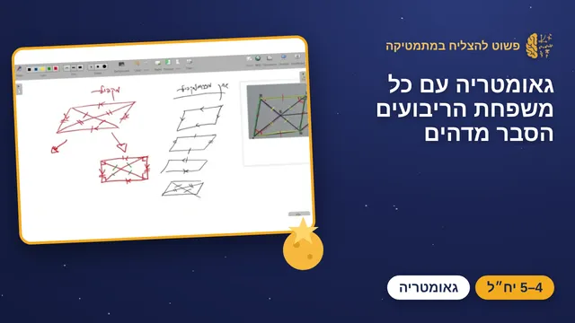
גאומטריה עם כל משפחת הריבועים הסבר מדהים תרגילי מפגש תיכונים כיתה י 4 5 יח 2
תרגילי מפגש תיכונים כיתה י 4 5 יח 2 תרגילי מפגש תיכונים כיתה י 4 5 יח 1
תרגילי מפגש תיכונים כיתה י 4 5 יח 1 תרגיל מדהים – ריבוע עם חפיפות
תרגיל מדהים – ריבוע עם חפיפות תרגיל גאומטריה 4 יחהסבר איך כותבים טענה-נימוק נכון
תרגיל גאומטריה 4 יחהסבר איך כותבים טענה-נימוק נכון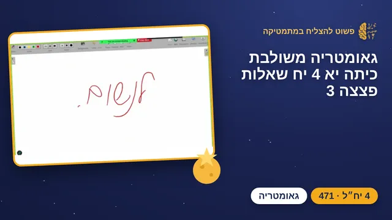
גאומטריה משולבת כיתה יא 4 יח שאלות פצצה 3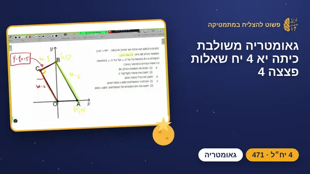
גאומטריה משולבת כיתה יא 4 יח שאלות פצצה 4גאומטריה משולבת כיתה יא 4 יח שאלות פצצה 2גאומטריה משולבת כיתה יא 4 יח שאלות פצצה 1 תכונות משולש שווה שוקיים
תכונות משולש שווה שוקיים משולש שווה שוקיים – תכונות
משולש שווה שוקיים – תכונות שאלות גאומטריה ברמה גבוהה מאוד – מרובעים ומעגלתכונות בגאומטריה – סיכום משולשים, מרובעים, חפיפה ודמיון
שאלות גאומטריה ברמה גבוהה מאוד – מרובעים ומעגלתכונות בגאומטריה – סיכום משולשים, מרובעים, חפיפה ודמיון גאומטריה 481 – סיכום משולשים וחפיפות, מקבילית וקטע אמצעים
גאומטריה 481 – סיכום משולשים וחפיפות, מקבילית וקטע אמצעיםגאומטריה – שאלון 571 כל הנושאים של שאלון 571 ←
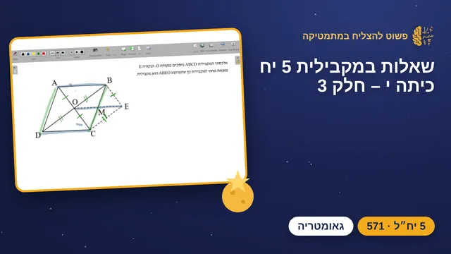
שאלות במקבילית 5 יח כיתה י – חלק 3 שאלות בטרפז 5 יח כיתה י – חלק 2
שאלות בטרפז 5 יח כיתה י – חלק 2 שאלות במקבילית 5 יח כיתה י – חלק 4
שאלות במקבילית 5 יח כיתה י – חלק 4 שאלות בטרפז 5 יח כיתה י – חלק 1חזרה בגאומטריה – מקבילית, מלבן ומשולשים דומיםמרובעים כל החוקים כיתה ט י 4 5 יח מטורף הכל ברגע30 60 90 משולששאלות טרפז ארכימדס 5 יח כיתה י 2
שאלות בטרפז 5 יח כיתה י – חלק 1חזרה בגאומטריה – מקבילית, מלבן ומשולשים דומיםמרובעים כל החוקים כיתה ט י 4 5 יח מטורף הכל ברגע30 60 90 משולששאלות טרפז ארכימדס 5 יח כיתה י 2 שאלות טרפז ארכימדס 5 יח כיתה י 1הסבר קטע אמצעיםגאומטריה עם כל משפחת הריבועים הסבר מדהים
שאלות טרפז ארכימדס 5 יח כיתה י 1הסבר קטע אמצעיםגאומטריה עם כל משפחת הריבועים הסבר מדהים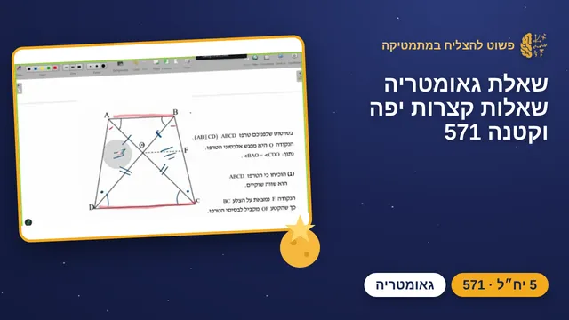
שאלת גאומטריה שאלות קצרות יפה וקטנה 571 גאומטריה שאלה מתוקה ויפה שאלת בגרות 571
גאומטריה שאלה מתוקה ויפה שאלת בגרות 571 גאומטריה 5 יח תרגיל בגרות 2
גאומטריה 5 יח תרגיל בגרות 2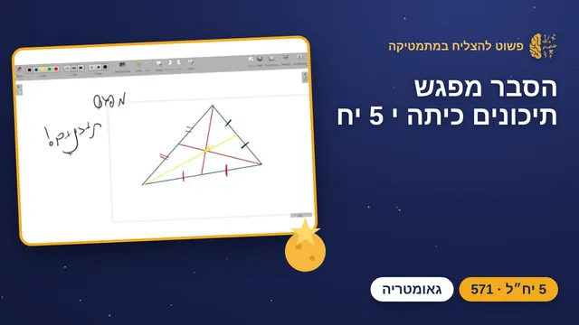
הסבר מפגש תיכונים כיתה י 5 יחתרגילי מפגש תיכונים כיתה י 4 5 יח 2תרגילי מפגש תיכונים כיתה י 4 5 יח 1 תרגיל בגאומטריה – מפגש תיכונים עם קטע אמצעים כיתה י 5 יח
תרגיל בגאומטריה – מפגש תיכונים עם קטע אמצעים כיתה י 5 יח הסבר של כל הרעיונות של מקבילית, מלבן, מעוין וריבוע 5 יחתרגיל מדהים – ריבוע עם חפיפות
הסבר של כל הרעיונות של מקבילית, מלבן, מעוין וריבוע 5 יחתרגיל מדהים – ריבוע עם חפיפות תרגיל גאומטריה נדיר ביופיו 5 יח כיתה יהסבר איך כותבים טענה-נימוק נכון
תרגיל גאומטריה נדיר ביופיו 5 יח כיתה יהסבר איך כותבים טענה-נימוק נכון תרגילי גאומטריה הכנה לכיתה יא 5 יח 3
תרגילי גאומטריה הכנה לכיתה יא 5 יח 3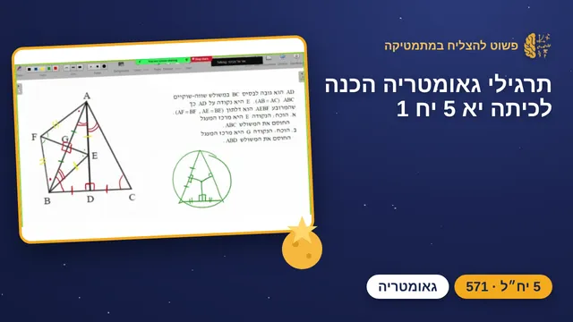
תרגילי גאומטריה הכנה לכיתה יא 5 יח 1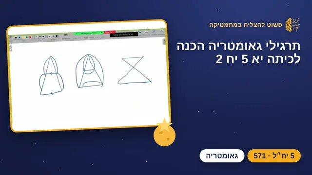
תרגילי גאומטריה הכנה לכיתה יא 5 יח 2 גאומטריה שאלת בגרות 581 קיץ 2025תכונות משולש שווה שוקייםמשולש שווה שוקיים – תכונות
גאומטריה שאלת בגרות 581 קיץ 2025תכונות משולש שווה שוקייםמשולש שווה שוקיים – תכונות גאומטריה 571 שאלת בגרות
גאומטריה 571 שאלת בגרות גאומטריה 581 – לחדד את המוח
גאומטריה 581 – לחדד את המוח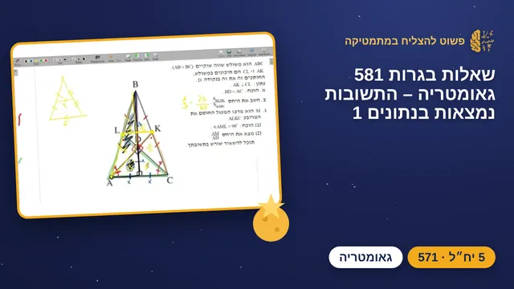
שאלות בגרות 581 גאומטריה – התשובות נמצאות בנתונים 1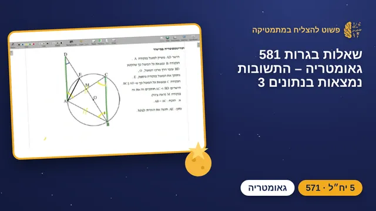
שאלות בגרות 581 גאומטריה – התשובות נמצאות בנתונים 3 שאלות בגרות 581 גאומטריה – התשובות נמצאות בנתונים 2שאלות גאומטריה ברמה גבוהה מאוד – מרובעים ומעגל
שאלות בגרות 581 גאומטריה – התשובות נמצאות בנתונים 2שאלות גאומטריה ברמה גבוהה מאוד – מרובעים ומעגל גאומטריה 5 יח 581 שאלה 4 – שאלה קשה מאודתכונות בגאומטריה – סיכום משולשים, מרובעים, חפיפה ודמיון
גאומטריה 5 יח 581 שאלה 4 – שאלה קשה מאודתכונות בגאומטריה – סיכום משולשים, מרובעים, חפיפה ודמיון חורף 2022 מועד א – גאומטריה שאלה 4 5812018 מועד ב – גאומטריה שאלה 4 581
חורף 2022 מועד א – גאומטריה שאלה 4 5812018 מועד ב – גאומטריה שאלה 4 581 חורף 2022 נבצרים – גאומטריה שאלה 4 5812022 מועד א – גאומטריה שאלה 4 581
חורף 2022 נבצרים – גאומטריה שאלה 4 5812022 מועד א – גאומטריה שאלה 4 581